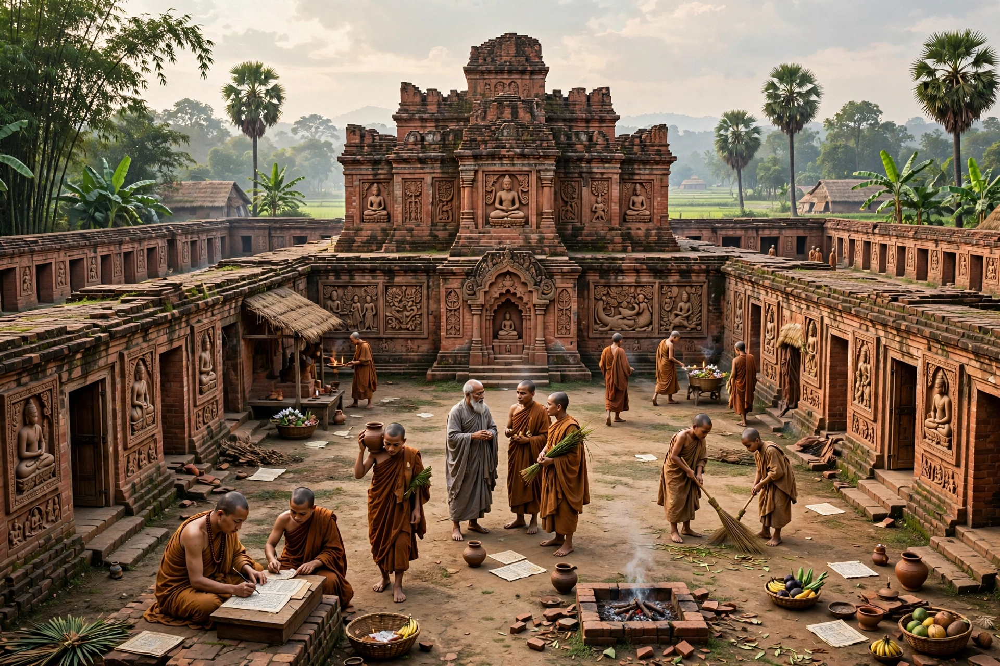

The Pala Empire was an imperial power in the Indian subcontinent originating in Bengal, ruling from the 8th to 12th centuries CE. Founded by Gopala in c. 750, who was reportedly elected by regional chieftains to end anarchy (matsyanyaya), the Palas were devout Mahayana and Tantric Buddhists who patronised learning across religions.

| Capital | Pataliputra, Mudgagiri and others |
|---|---|
| Period | c. 750–1161 CE |
| Founder | Gopala |
| Religion | Buddhism, Shaivism, Vaishnavism |
Under Dharmapala (770–810) and Devapala (810–850) the empire reached its zenith, controlling much of northern India and contesting Kannauj in tripartite struggle with the Gurjara-Pratiharas and Rashtrakutas. Later rulers faced decline, a Kaivarta revolt, revival under Mahipala I and Ramapala, and finally displacement by the Sena dynasty.
Palas founded Vikramashila and Somapura Mahavihara, supported Nalanda, and spread Buddhism to Tibet and Southeast Asia — the monk Atisha was from a Pala-era monastery. Pala art, in black stone and bronze sculpture and palm-leaf manuscripts, influenced Nepal, Tibet and Myanmar. Proto-Bengali developed under their rule.